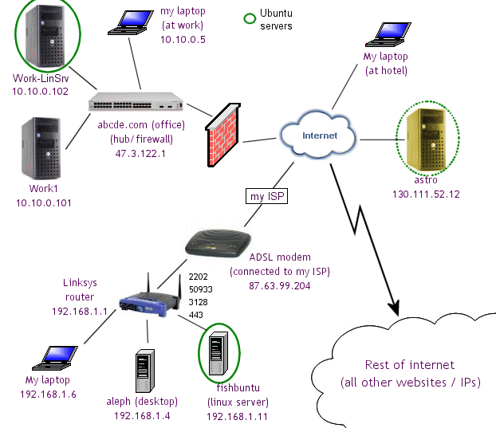
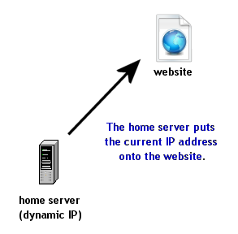
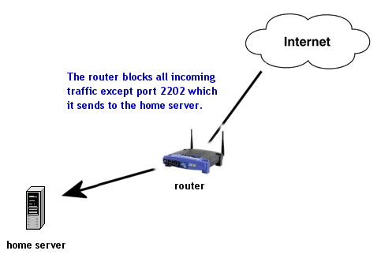
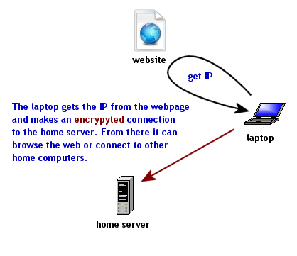
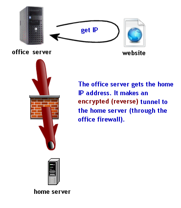
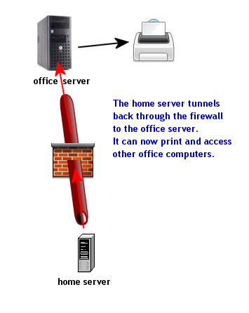
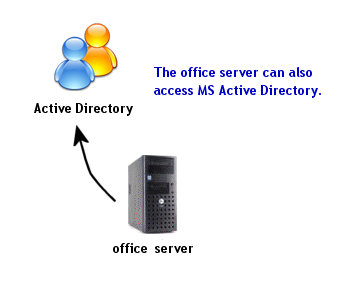

Contents in Detail
Note: you don't have to read each part in the order presented here.
Part 1. Introduction and tables for future reference (this document):
- Software programs used / referred to
- My network setup with rationale
- Diagrams: a visual explanation of the network connections
- List of computer names and logins for this document
- List of tunnels to be made using SSH
- One thing that SSH cannot do
Part 2. Setting up and preparing your home Linux server
- Setting up your Linux server
- How to secure your home linux server
- Setting up port forwarding on your router
Part 3. Setting up and using SSH
How to have an encrypted connection to the internet from anywhere (via your home server). Automate the connection using Autoit and Putty. Access your desktop remotely using VNC.
Part 4. How to handle having a dynamic IP address
Controlling your Dynamic IP address yourself allows you to write better scripts to automate connections from anywhere
Part 5. Extra security for home server: route all tunnels though external server first
If you have an SSH account on another server. You can make your home server really secure by forcing all connections to be routed through the other server (called Astro in this document).
Part 6. How to reverse an SSH connection (to connect to the office)
This part tells you how to break through your office firewall, so that you can print and access your work from home.
Part 7. How to wake up your home computer from over the internet
Your Linux server will always be powered on; it can wake up any other computer that you use at home.
Part 8. How to print to a network printer/photocopier at the office
Read this after part 6 is done.
Part 9. Using DD-WRT on your router as a server
Part 10. Using X-forwarding for GUI control of your server
Part 11. How to access Active Directory from home
If you have part 6 done, you can also easily access files in Active Directory at the office
Part 1: Introduction & Overview
SSH is a protocol that is used over the internet. It creates a secure encrypted connection between two computers. It also allows you to create things called tunnels which can send all sorts of other computer applications over the internet — encrypted to prevent anyone from intercepting it. Examples: remote desktop, email, web browsing, file transfer, remote printing.
This document has an inherent tendency to get overly complicated. I am trying to keep things simple and apologise for any confusion. Please email me if you find any errors or unclear explanations.
While I explain how to do a lot of things with SSH, I am not sure if I am an expert. The problem is that there is no document clearly explaining how to do all of this. A lot of it, especially ssh -R, had to be discovered through trial and error, and by getting nuggets of information from many other sites. The title of this article is technically false, since I am not covering a few things like ssh-agent forwarding, file copying using ssh, scp or sftp, using ssh-copy-id, sshfs, or ssh-vulnkey. I don't use these things regularly and they are not essential to ssh connections and tunneling which is what I am focusing more on.
Note: there are two versions of SSH, make sure that you always use version 2, version 1 can be hacked.
I. Software referred to:
Windows XP - this is the operating system on my laptop, desktop, and office computers.
Ubuntu - the operating system on my Linux server. Very easy to setup .
There are a number of programs downloaded and added to it. These will be described as they show up below.
Free windows programs:
(1) Putty (and Pagent).
This is the standard ssh program for Windows. It has
a handy commandline version, but unfortunately some commands are missing
(the GUI interface does more than the CLI) !
The Putty Portable version is nice because you can create one
setup exactly as you like it and trasnfer it to your laptop, USB drive, etc.
The problem with this is that PuttyPortable only allows one instance of the program at a time.
This means that you can't set up one tunnel and then run putty to tunnel something
through the first tunnel. What I've done is setup Putty exactly how I want it on one computer,
then exported the registry entries for Putty. On my other computers, etc. first I delete
all previous Putty registry entries, then merge the ones from my ideal setup.
See "Configuring PuTTY"
(2) SSH Secure Shell Client 3.2.9 This is a program that is no longer supported. However it still works well for everything except for SOCKS proxies. The one wonderful feature that this program has is that SSH FTP is built in and is graphical!! You just point and click to transfer files using SSH. (This can also be done by downloading Filezilla and configuring that, but it is one more program to install.)
(3) WGET or CURL- a commandline utility to get a webpage and save it as a textfile. This program also works in Linux.
(4) AutoIt- this is the scripting program that I use instead of batch files. It is much more powerful than batch files. It is also better than Kixtart which I was using before.
(5) TightVNC This is one of the common VNC programs. Use any of them to view and control your computer remotely. Unfortunately TightVNC Portable is not free! How dumb.
(6) Filezilla If you don't use "SSH Secure Shell" for ftp transfers then you should probably use this. It is a GUI ftp program that can be tunneled though SSH.
Cygwin. This is a unix shell for windows. I tried using it for SSH, but ran into snags having SSH and SSH-AGENT stay running when I closed the shell. I also couldn't get them to restart SSH automatically when the internet connection is reset. Cygwin is used if you want to run an SSHD ssh-daemon in Windows.
The programs SRVANY and LAUNCHSRV were used to try and launch Putty as a service, but it never worked properly.
II. Network Setup
The following diagram explains my home/office network. I will be referring to these computers by their names and IP addresses as I explain how to use SSH in various ways.

- At the bottom right is my home. I need to access my home files from anywhere I go.
- At the top left is my office. I need to be able to access my office computers from anywhere, and print from anywhere.
- I have a unix account on a computer named Astro (this computer becomes very important for security reasons)
- I also want to use my laptop securely at a hotel, etc. So I will route all my internet access through my home computers.
- All connections must be encrypted (using ssh). The only connection that is not encrypted is the outgoing one from my ASDL modem (and then my ISP) to the rest of the internet (e.g. to Google.com)
- I don't want the rest of the internet to be able to access my home computers
- I don't want the rest of the internet to get at my office computers through the hole that I (surreptitiously) punch in my workplace's firewall.
- My ISP assigns me
a dynamic address. Therefore
it can change any time the link goes down. To deal with this, you need
to have a webpage which you can update with scripts (more later). I
assume that you have a webpage somewhere outside of your local home
network that you can control and modify. I am writing these instructions
to handle dynamic IP addresses.
If you have a static IP address for your home, you can simplify these instructions a lot (ignore all of the sections).
Update: I no longer have access to Astro! The university
I was using finally cut me off. I will now modify these instructions
so that they work without having access to a unix account on a computer
like Astro. (Astro was important for hosting my webpage as well as doing
SSH tunnelling.)
Anything specific to Astro will be marked with a
— mostly in part 5. Instead, I now am using a website
that allows me to write Perl CGI scripts.
III. A picture is worth ... Network connection diagrams.
|
 Part 4: Handling a Dynamic IP |
 Part 2(g): Setting up Port Forwarding on your Router |
|
 Part 3: Using SSH |
 Part 6: Reverse SSH from office |
|
 Part 8: How to print to office printer |
 Part 11: accessing Active Directory |
All of these possible connections are set up and work together. For instance, I can use any computer at home to print to the office or to access Active Directory at work. I an also use my laptop anywhere to securely connect to my home server and from there do anything that I can do from home.
IV. List of logins and computers referred to in this document
All names and ports are fake. Replace them with the names that you are using.
| Computer | Login name | Purpose |
|---|---|---|
| Astro | starry | the login that I use for astro |
| Fishbuntu | rubio | the main login I use for Fishbuntu. sudo account |
| Fishbuntu | gia321 | limited shell login to Fishbuntu. Only allowed to make SSH tunnels (for others to use) |
| WorkLinSrv | osmium | my login on Work-LinSrv. It is a sudo account, but doesn't have to be. |
| mysite.com | abcde | A website on the internet that you can control (and run CGI scripts) |
V. List of Tunnels and Ports used in Putty
READ ME: This is a summary of all of the tunnels and ports that I use, and which computer they are tunneled to. This will become more clear later on. There are so many different things that I want to do, that it is important to organize them in a table. Each table is a seperate Putty profile. It looks really complicated, but it is used to configure Putty and/or write out ssh scripts, which I have added under each table. I'm not sure how to make this simpler or clearer. Don't let this confusion make you give up!
1. General tunnels needed for access home server from anywhere (these go on your USB key or Laptop)
| Username | SSH Port | to IP / computer | Purpose | ||
|---|---|---|---|---|---|
| starry | 22 | Astro's IP | This sets up outer tunnel to Astro, all access to Fishbuntu goes through this (see Part 6). If you don't have access to Astro, then skip this section (with the red stars). | ||
| SrcPort | IP | DstPort | Purpose | Ancillary Program setting | |
| 2222 | fishbuntu (87.63.99.204) |
2202 | tunnel through Astro to my home | Putty: ssh to localost:2222 | |
| Command line (PuTTY): ssh starry@astro.edu -i \path\myprivatekey -L 2222:87.63.99.204:2202 |
|||||
| Username | SSH Port | to IP / computer | Purpose | ||
|---|---|---|---|---|---|
| rubio | 2202 | Fishbuntu's IP | SSH to fisbuntu (see part
4 and part 5) (If you have access to Astro, then change this to connect to localhost port 2222. i.e. "ssh rubio@localhost -P 2222 ...") All tunnels labelled # connect to the office Linux server and require additional set up: see part 3. |
||
| SrcPort | IP | DstPort | Purpose | Ancillary Program setting | |
| 5522 | localhost | 5522 | reverse SSH to Work-LinSrv # | from fishbuntu commandline: ssh osmium@localhost -p 5522 or: from laptop: set up a putty session as described below |
|
| 5511 | localhost | 5511 | VNC to Work1 # | VNC to localhost:5511 | |
| 9191 | localhost | 9191 | network printing # | install a printer that prints to locahost:9191 | |
| 5000 | desktop 192.168.1.4 |
5900 | VNC to desktop | VNC to localhost:5000 | |
| 1234 | localhost | 3128 | Squid | set browser proxy to localhost:1234 | |
| 1974 | localhost | 1974 | OpenVPN (I haven't got this working yet) |
set config file to go to localhost:1974 configure Linux "route" command |
|
| Command line (PuTTY): ssh rubio@87.63.99.204 -P 2202 -i \path\myprivatekey -L 5522:localhost:5522 -L 5511:localhost:5511 -L 9191:localhost:9191 -L 5000:192.168.1.4:5900 -L 1234:localhost:3128 |
|||||
| Username | SSH Port | to IP / computer | Purpose | ||
|---|---|---|---|---|---|
| gia321 | 2202 | Fishbuntu's IP | SSH to fisbuntu (for other people to use) See ___ | ||
| SrcPort | IP | DstPort | Purpose | Ancillary Program setting | |
| gia321 |
use whatever tunnels you want to allow people to access (e.g. Squid, but not network printing) | See settings above. | |||
| Command line (PuTTY): ssh gia321@87.63.99.204 -P 2202 -i \path\secondprivatekey -L 1234:localhost:3128 |
|||||
| Username | SSH Port | to IP / computer | Purpose | ||
|---|---|---|---|---|---|
| osmium | 5522 | localhost | SSH to Work-LinSrv (to command line) # | ||
| SrcPort | IP | DstPort | Purpose | ||
| -- no tunnels needed | Note: this connection is useful if you do it with "SSH Secure Shell" instead of Putty. It will allow you to have a GUI sftp connection to transfer files from your current computer (laptop or desktop) to the office server. | ||||
| Command line (PuTTY): ssh osmium@localhost -P 5522 |
|||||
2. Tunnels needed only from home desktop (same LAN as Fishbuntu)
| Username | SSH Port | to IP / computer | Purpose | ||
|---|---|---|---|---|---|
| rubio | 2202 | 192.168.1.11 | SSH to fisbuntu | ||
| SrcPort | IP | DstPort | Purpose | Ancillary Program setting | |
| 5522 | localhost | 5522 | reverse SSH to Work-LinSrv # | -- | |
| 5511 | localhost | 5511 | VNC to Work1 # | VNC to localhost:5511 | |
| 9191 | localhost | 9100 | network printing # | install a printer that prints to locahost:9191 | |
| Command line (PuTTY): ssh rubio@192.168.1.11 -P 2202 -i \path\myprivatekey -L 5522:localhost:5522 -L 5511:localhost:5511 -L 9191:localhost:9100 |
|||||
| Username | SSH Port | to IP / computer | Purpose | ||
|---|---|---|---|---|---|
| osmium | 5522 | localhost | SSH to Work-LinSrv (to command line) # | ||
| SrcPort | IP | DstPort | Purpose | ||
| -- no tunnels needed | |||||
| Command line (PuTTY): ssh osmium@localhost -P 5522 |
|||||
3. Tunnels needed from Office Linux server (related to all the # above)
| Username | SSH Port | to IP / computer | Purpose | ||
|---|---|---|---|---|---|
| gia321 | 2202 | Fishbuntu's IP | Reverse SSH so that Fishbuntu can later connect to work computers. | ||
| Port | Purpose | ||||
| SrcPort | IP | DstPort | Purpose | ||
| -R | 5522 | localhost | 22 | reverse tunnel: SSH to Work-LinSrv | |
| -R | 5511 | 10.10.0.101 | 5900 | VNC to Work1 | |
| -R | 9191 | 10.10.200.54 | 9100 | network printing | |
| (possibly add another if you are going to set up a VPN) | |||||
Command line (OpenSSH): see section 6 for automatic connection. ssh -o StrictHostKeyChecking=no -R 5522:localhost:22 -R 9191:localhost:9100 -R 5511:10.10.0.101:5900 -p 2202 gia321@`cat $HOME/scripts/myip.num` |
|||||
VI. One thing that SSH cannot do
SSH cannot overcome the problems of Microsoft Windows in one area: sharing
network drives over SSH tunnels. Why is this needed anyway? You can easily
transfer files using SSH (and sftp). The reason for doing this would be to stream
a file from your Windows desktop at home to your laptop when you're in a hotel
- e.g. to listen to an MP3 song or start watching a video without having to download it
from your desktop first.
There is a way to do it in MS Windows
- you have to disable file and printer sharing, add a loopback device,
tunnel port 139 ... The problem that I have with doing this is that it
messes up my other network connections (e.g. my corporate email program
won't work at all if I do this). I think that this problem occurs because
Windows does not consider the possibility that you might be sharing drives
remotely.
The solution is to set up a VPN - Virtual Private Network.
Is it worth the trouble? Probably not. You can do so much with SSH that
you probably don't need a VPN. The main reason for needing a VPN is if
you need to access files from a number of servers - e.g. at the office.
This allows you to connect to the office network just as if you are physically
at the office. You can do this with SSH, but you would need a separate
tunnel for each machine you want to connect to as well as something (sshd
or VNC) each machine to accept the connection.